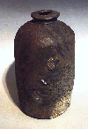

The Anagama kiln is the oldest style of kiln in Japan and has been around since medieval times. The beauty of Anagama style firing lies in the natural ash glazes that can be achieved, and in the excitement of the long firing itself, appreciated by many potters all over the world.
There are many different designs for the Anagama kiln, not only in Japan, but on other continents. Not only are there different designs, but also different methods of firing and stacking. No two firings are ever exactly alike, in contrast to let's say, the electric kiln.
The Anagama kiln will usually consist of of one long firing chamber with a firebox at one end and a flue at the other. Often there will also be smaller stacking ports on the side of the kiln. Traditional Anagama kilns are built on a slope, so that a better updraught can be achieved. Firing time can vary from one day to several weeks.
While Anagama is an ancient Japanese style, contemporary ceramic artists such as Peter Voulkos (USA), Chester Nealie (Australia), Dick Lehman (USA), Uwe Loellmann or Shiho Kanzaki (Japan) and many other have taken up the art and are continuing the tradition.
{kind=link}
{kind=link}